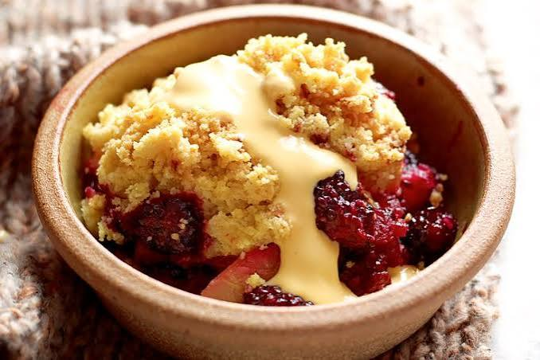

Home
Blackberry & Apple Crumble

Description
Fruit Filling
- 750g Bramley apples (peeled, cored, and sliced or chopped into chunks)
- 250g fresh blackberries
- 2–3 tbsp soft light brown sugar (plus extra depending on fruit tartness)
- 1 tsp ground cinnamon (optional)
For the Crumble Topping
- 200g plain white flour
- 100g cold unsalted butter (cubed)
- 100g soft light brown sugar (or a mix of caster and demerara sugar for crunch)
- 50g rolled oats (optional, for extra texture)
For the Custard
- 300ml whole milk
- 300ml double cream
- 4–8 large egg yolks (depending on how rich you want it)
- Alternative: A packet of Bird's Custard powder made with milk and sugar for a quick option
Steps
- Preheat the Oven: Heat your oven to 200°C / 180°C fan (Gas 6).
- Make the Filling: Layer the chopped apples and blackberries in a medium baking dish. Sprinkle 1–2 tablespoons of sugar and cinnamon over the fruit and toss lightly.
- Make the Crumble Topping: Place the flour and cubed cold butter into a large bowl. Rub the butter into the flour using your fingertips until the mixture resembles fine breadcrumbs. Stir in the brown sugar and oats.
- Assemble and Bake: Scatter the crumble topping evenly over the fruit without pressing it down too hard. Bake in the oven for 30 to 40 minutes until the topping is golden brown and the fruit juices are bubbling. Let it rest for 10 minutes before serving.
- Make the Custard>: Warm the milk, double cream, and split vanilla pod in a saucepan until steaming. Whisk the egg yolks and caster sugar together in a bowl. Pour the hot milk slowly into the egg mixture while whisking constantly, then transfer it back to the pan. Cook gently over low heat, stirring continuously until the custard thickens enough to coat the back of a spoon (do not let it boil) or Prepare Bird's Custard following the stovetop package instructions using milk and sugar.
- Serve: Spoon the warm crumble into bowls and pour the hot custard generously over the top.